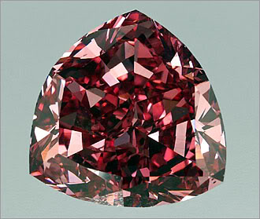
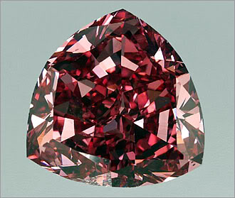

History of Diamnds
The earliest diamonds were found in India in 4th century BC, although the youngest of these deposits were formed 900 million years ago. A majority of these early stones were transported along the network of trade routes that connected India and China, commonly known as the Silk Road. At the time of their discovery, diamonds were valued because of their strength and brilliance, and for their ability to refract light and engrave metal. Diamonds were worn as adornments, used as cutting tools, served as a talisman to ward off evil, and were believed to provide protection in battle. In the Dark Ages, diamonds were also used as a medical aid and were thought to cure illness and heal wounds when ingested.
Expensive diamonds
Find diamond become rich..let's find it!
 

De Beers Centenary Diamond
The De Beers Centenary Diamond were classified as D levels by the Gemological Institute of America. It’s the highest grade of a diamond that colorless and internally and externally flawless.
The Hope Diamond
The hope diamond is 45.52 carats
(9.10 grams) large diamond that
now located in the Smithsonian
Museum of Natural History in
Washington DC. The diamond
looks blue in color to the eye.
Wittelsbach Diamond
The Wittelsbach diamond (Der Blaue Wittelsbacher) is a 35.36 carats (7.11 g) blue diamond with size of 40 mm in diameter with 8.29 mm in depth and VS 2 in clarity. It was become part of both Austrian and Bavarian crown jewels
Snow White
Long ago, in a faraway place,
there lived a lovely princess
named Snow White.
Her hair was black as coal,
her lips red as rose,
and her skin as white as snow.
Snow White's stepmother, the
Queen, was very cruel.
Read More